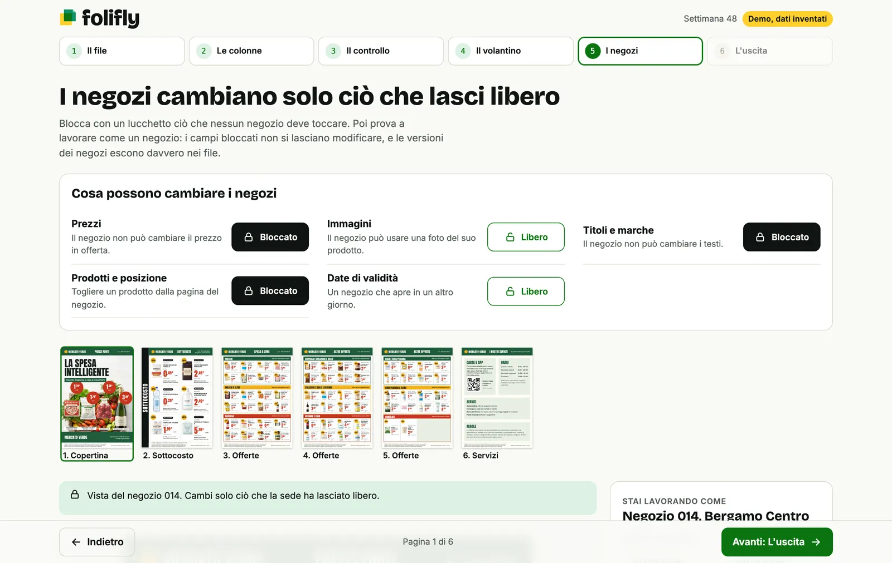
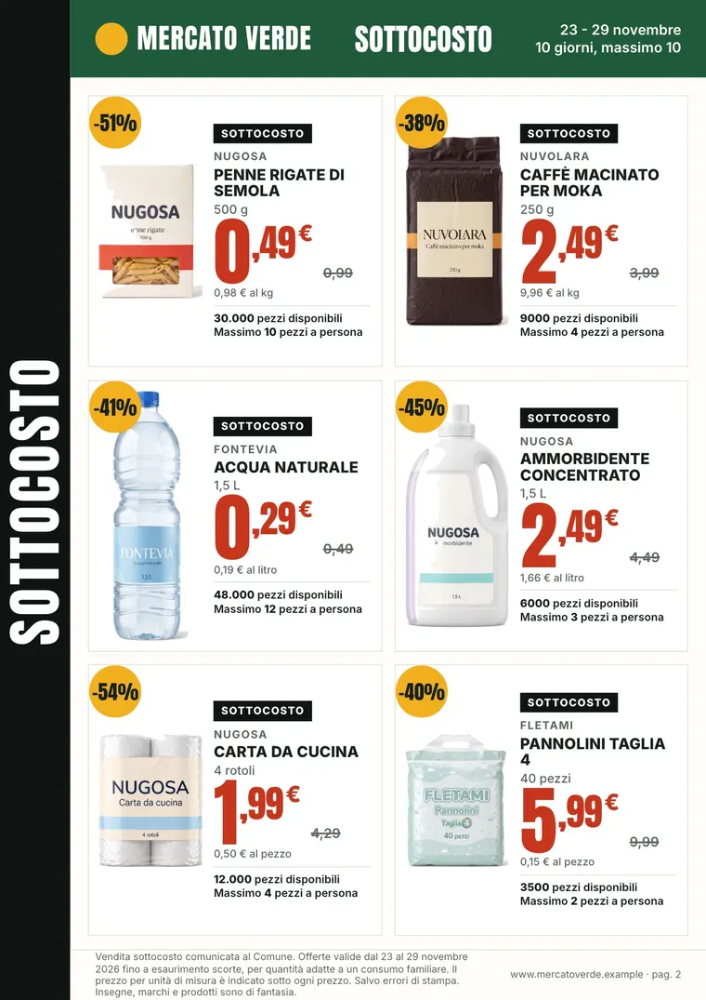
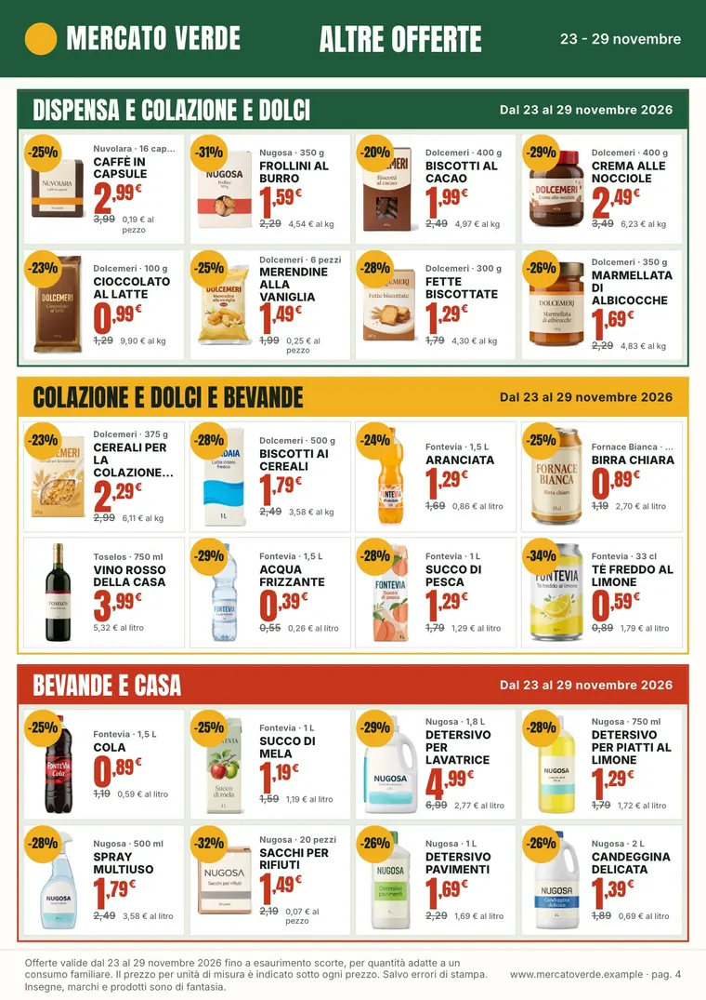
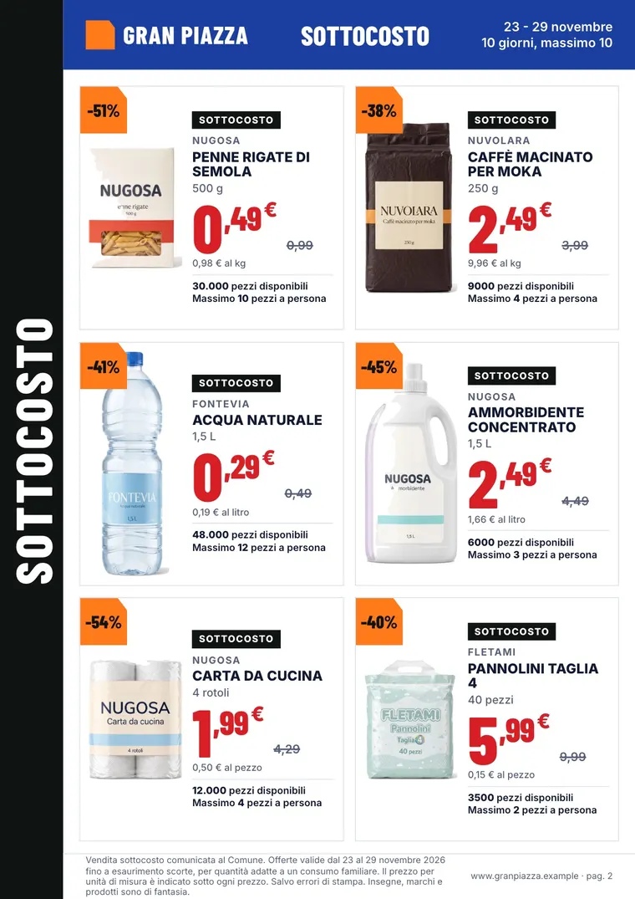
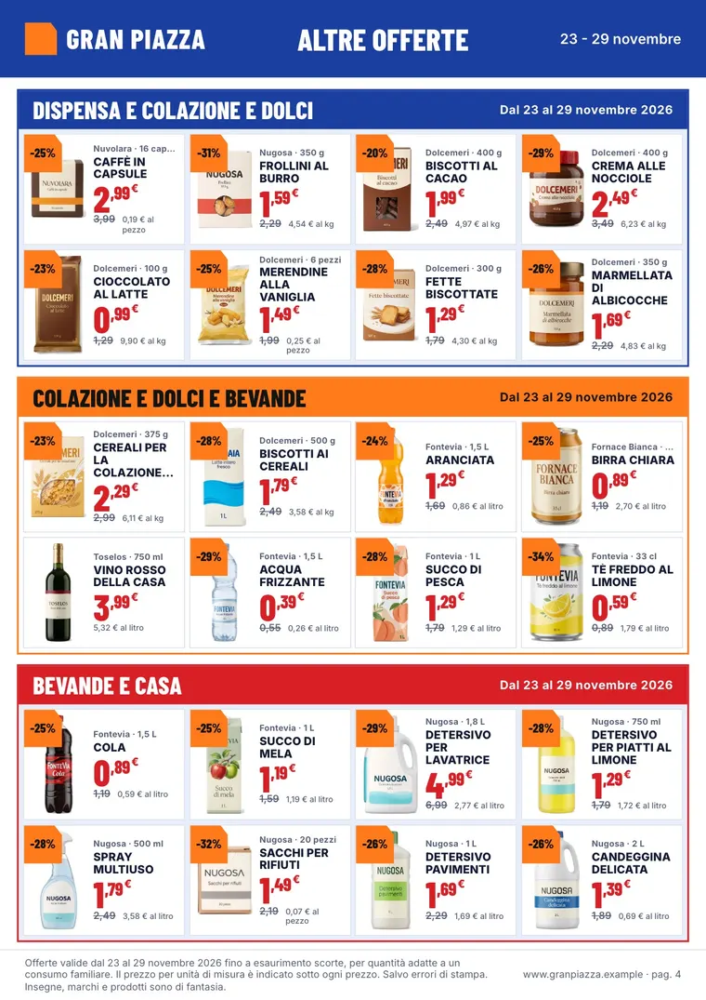
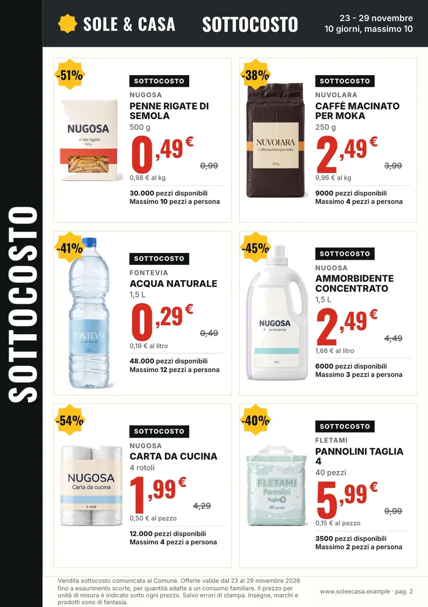
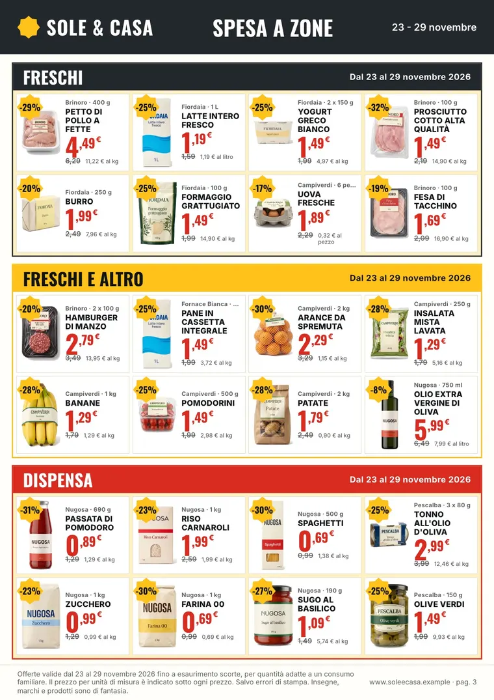
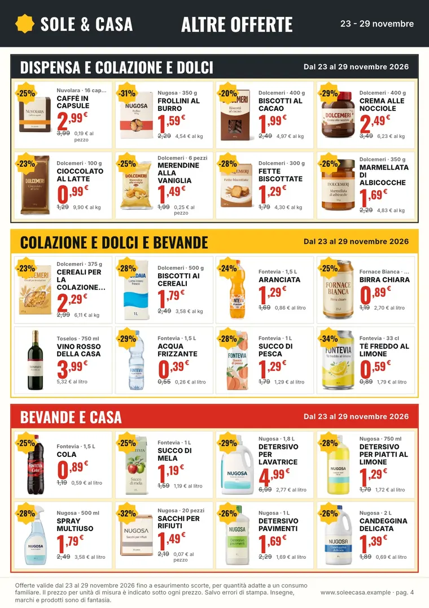

30 gg
Prezzo precedente
Art. 17-bis, Codice del consumo
Lo sconto si calcola sul prezzo più basso dei 30 giorni prima. Se il file non lo conferma, l'offerta si ferma. Freschi e ortofrutta seguono la loro regola.
Bozza: l'indirizzo per prenotare le demo è ancora da decidere.
Piattaforma in licenza per catene e grandi marchi
Folifly legge il file delle vendite, controlla prezzi e regole, compone le pagine con i vostri modelli e prepara PDF, JPG e PSD per la sede e per ogni punto vendita.
Plans in. Flyers out.


Nella demo con dati d'esempio
Come funziona
Il team marketing lavora sul file che usa già. Folifly fa il resto e chiede conferma solo quando serve.
Caricate il file delle offerte della settimana, in CSV o Excel, con le colonne che usate di solito.




Le pagine che escono
Ogni insegna ha i suoi colori, il suo carattere e la sua forma del bollino. Qui sotto le pagine esportate dalla demo, senza ritocchi.











Insegne, marchi, prodotti e prezzi sono inventati. Le confezioni sono immagini generate con l'AI.
I controlli di legge
Prima di comporre, Folifly confronta ogni offerta con le regole italiane sulla pubblicità dei prezzi e segnala ciò che manca.
30 gg
Art. 17-bis, Codice del consumo
Lo sconto si calcola sul prezzo più basso dei 30 giorni prima. Se il file non lo conferma, l'offerta si ferma. Freschi e ortofrutta seguono la loro regola.
10 gg · 50 ref.
D.P.R. 218/2001
Al massimo 10 giorni e 50 referenze, con i pezzi disponibili e il limite per persona stampati sulla pagina.
€/kg · €/l
Codice del consumo
Il prezzo al chilo, al litro o al pezzo accanto a ogni prezzo, calcolato dal formato del prodotto.
I controlli aiutano il team e non sostituiscono il parere legale. La comunicazione al Comune e il limite di tre vendite sottocosto l'anno restano da verificare fuori dalla piattaforma.
Versioni per negozio
Cinque lucchetti stabiliscono cosa può cambiare ogni punto vendita. Le modifiche permesse entrano davvero nei file del negozio, quelle bloccate no.
Esempio di regole: le decide la sede, settimana per settimana.
PDF, JPG, PSD
Vettoriale, con i caratteri incorporati. Una pagina A4 per foglio.
settimana-48_sede.pdfJPG
Un'immagine per pagina, a 150 o 300 dpi.
settimana-48_014_pagina-01.jpgPSD
Sfondo, confezioni, testi e prezzi su livelli separati, con le guide di sicurezza a 4 mm.
settimana-48_sede_pagina-02.psdAbbondanza, crocini e profilo colore si impostano insieme alla vostra tipografia. Nella demo, 8 pagine in JPG, PSD e PDF escono in circa 21 secondi.
Dati registrati
Folifly registra ciò che passa dal processo e lo restituisce alla catena in forma leggibile, dalla prima settimana.
In seguito: misure di lettura del volantino digitale e collegamento a vendite e scorte.
Per chi è
Una sede marketing e centinaia di negozi, con versioni locali, date diverse e regole uguali per tutti.
Il trade marketing che prepara pagine e materiali per più insegne, con il proprio catalogo e le proprie regole.
Dati, sicurezza e AI
Il file che caricate resta sul vostro dispositivo e non viene inviato a nessuno.
Uno spazio riservato alla catena e accessi per ruolo tra sede e negozi. I dati e i file restano della catena.
Una parte della composizione è fatta con l'AI e resta sempre rivedibile dal team prima dell'uscita. Prezzi e testi arrivano dal vostro file.
In una demo componiamo insieme il volantino di una settimana vera, con le vostre regole e i vostri negozi.
Plans in. Flyers out.